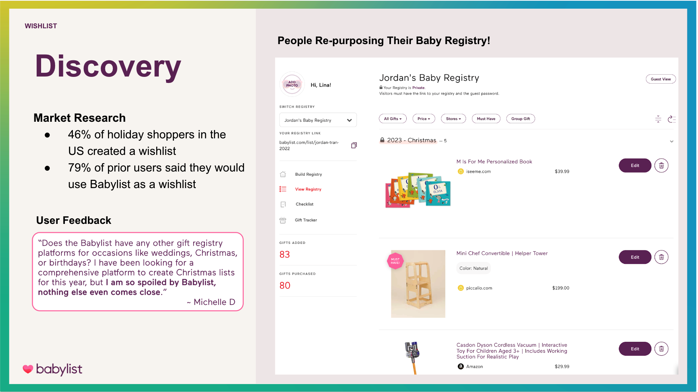
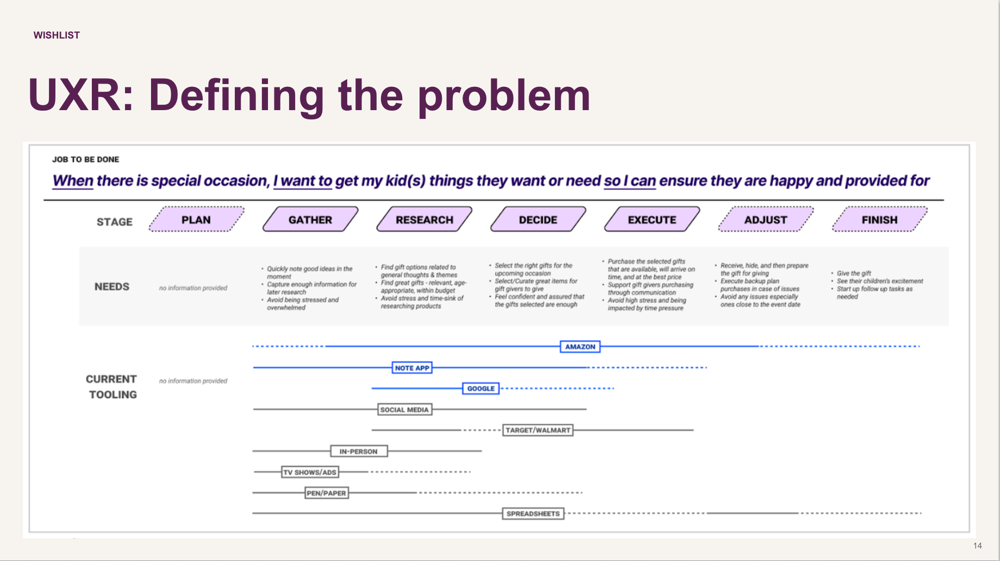
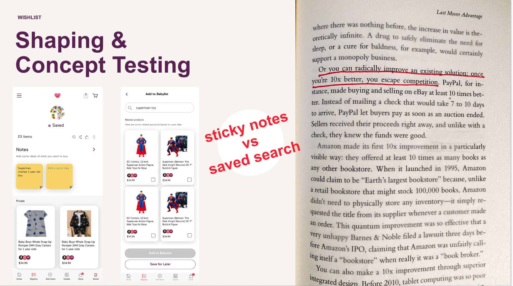
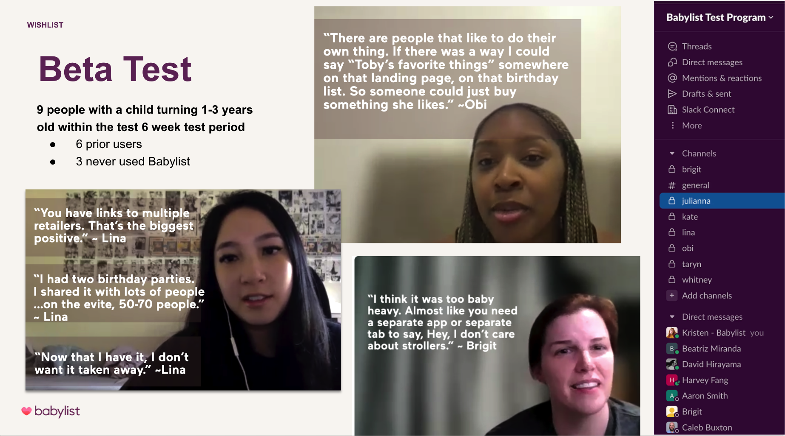
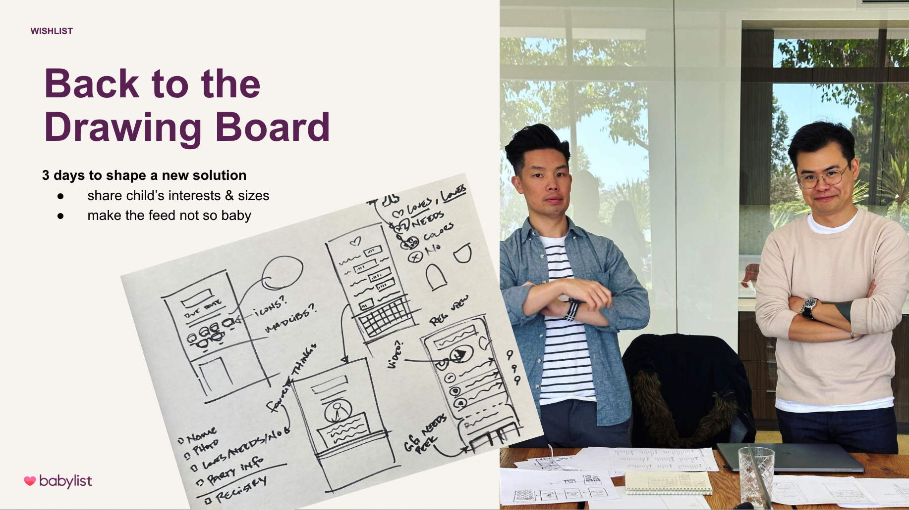
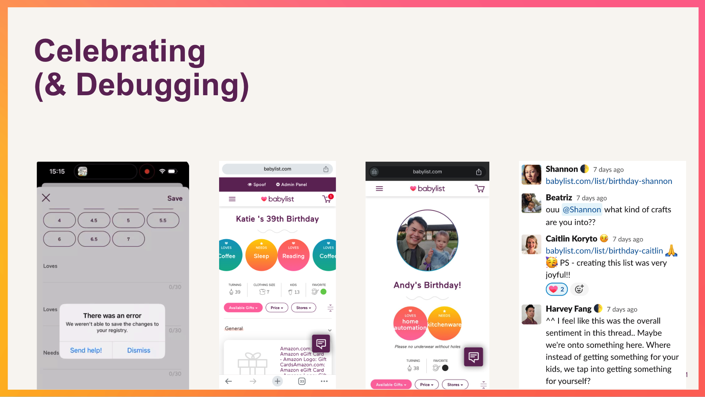
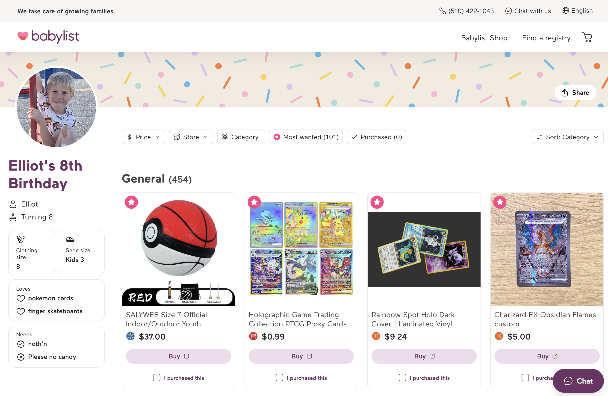
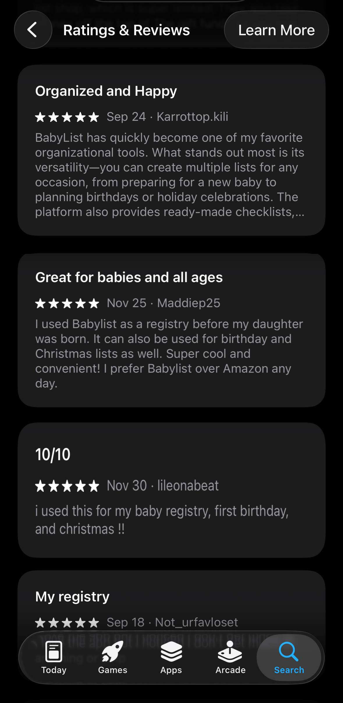
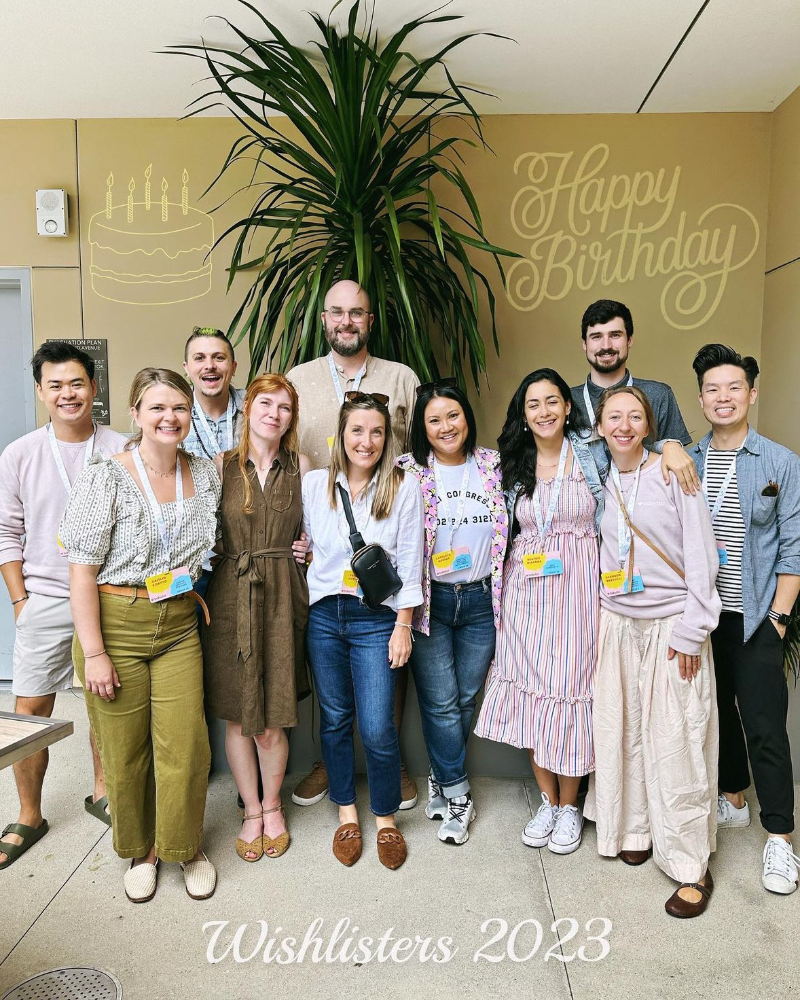

Babylist · 2023
Evolved Babylist from a mono-list product to a multi-list, multi-occasion platform. Led a team of 11 from discovery through launch.
Babylist's mission had expanded from serving expecting parents to supporting growing families.
I led the Wishlist initiative, a key part of the company's strategy to increase LTV.
Evolve Babylist from a single-list, single-occasion product to a multi-list, multi-occasion product.
Increase LTV (lifetime value).
70% of users say they'd be disappointed if they couldn't use Babylist for wishlists.
Zero-to-one in nine months.

01 · Discovery
I initially argued against this initiative, believing there was “too much meat on the bone” left for baby registries. But our CEO pushed me to reckon with our need to increase LTV. And many users were repurposing their baby registries for other occasions. I'm a believer in productizing behavior people are already doing.

02 · User Research
We couldn't assume that what worked for baby registries and showers would work for birthdays and holidays. I collaborated with a researcher on several interviews to understand: How are parents currently solving the problem of getting their children what they want or need for special occasions?
We learned that the primary tool was not other wishlists; it was the Notes app and the Photos app.

03 · Shaping & Concept Testing
I gave our founding team of 4 (one designer, one iOS developer, one data scientist and myself) the guidance that whatever we built needed to be 10x better than the experience of using Notes, Photos, or Amazon to collect the gifts you want. (Borrowing from Peter Thiel’s Zero to One.)
We concept tested two ideas:
Search was the winner… but people still preferred to use their Photos app for quickly storing gift ideas.

04 · The Beta Build
So we built our own photo search. It was so accurate & cool!
We could pull Google Shopping results right into the app!
It delivered on Babylist’s core value proposition “Add anything from any store”!
Oh yeah, and a basic onboarding to collect birth date.
Spoiler: We'd get a patent for this.

05 · Beta Test
We ran a high-touch beta with nine parents planning a child's birthday — six existing Babylist users, three people who'd never used Babylist. I determined we had 3 personas:
We only had fit with Evangelists, just 2 of 9 testers. Not enough. Fence Sitters told us asking for specific gifts felt rude; what they actually wanted was a way to share their kid's sizes and interests.

06 · Back to the Drawing Board
How might we collect a kid's sizes and interests, then surface that on a wishlist shared with friends and family? Our remote team gathered in person for three days to solve it, presenting options to leadership on day two.
The designer proposed the winner idea: a Mad Libs style onboarding to quickly and cutely collect loves, needs, favorite color, and “please no.” (All of our beta users talked about things they didn't want to get.)

07 · Fun with Debugging
The build passed formal QA, but I wanted a realistic trial before it reached real users. Our marketing manager proposed a delightful way to QA and celebrate: have all of us (the team had expanded to eleven) create real wishlists of things we wanted, draw names, and purchase each other gifts.
08 · Launch
Our company onsite was the week after our final Wishlist milestone launch. We had cake and revealed our surprise gifts to each other. 💜


09 · Results
Users love it so much they call it out in app reviews. And business impact beat expectations:
The Team
